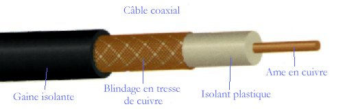

Les supports métalliques

Le support les plus connu est le câble utilisé pour relier les téléphones aux centraux téléphoniques. Cette liaison est de type métallique; elle est réalisée sur deux fils
appelès Paires téléphoniques.
Une paire téléphonique peut très bien être utilisée pour transmettre des données entre ordinateurs. On l'appelle alors "ligne de données". L'exemple le plus connu est
le Minitel mais l'ancétre dans ce domaine est le TELEX.
Le câble d'antenne de télévision est aussi un câble de transmission mais il a une technologie différente : c'est un câble coaxial. Il est utilisé pour la liaison d'antenne
mais aussi dans les réseaux téléphoniques et de télétransmission.
retour